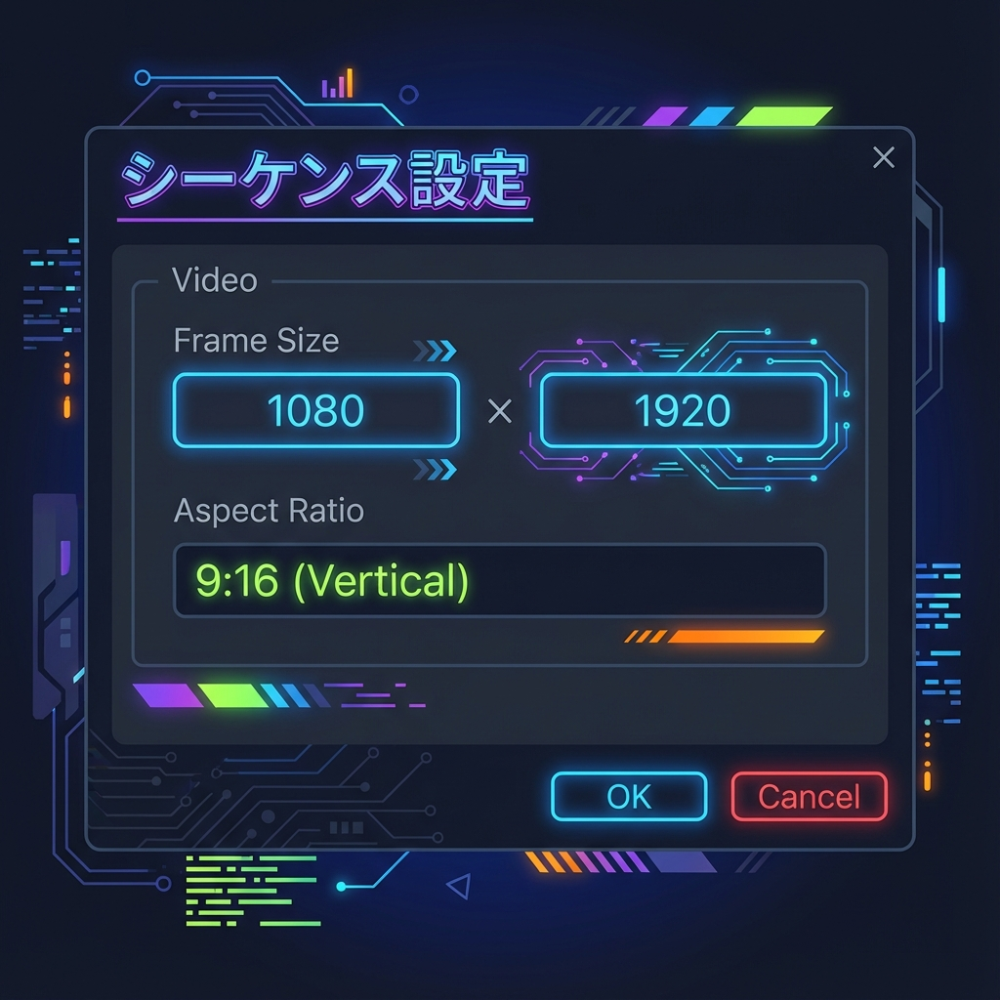
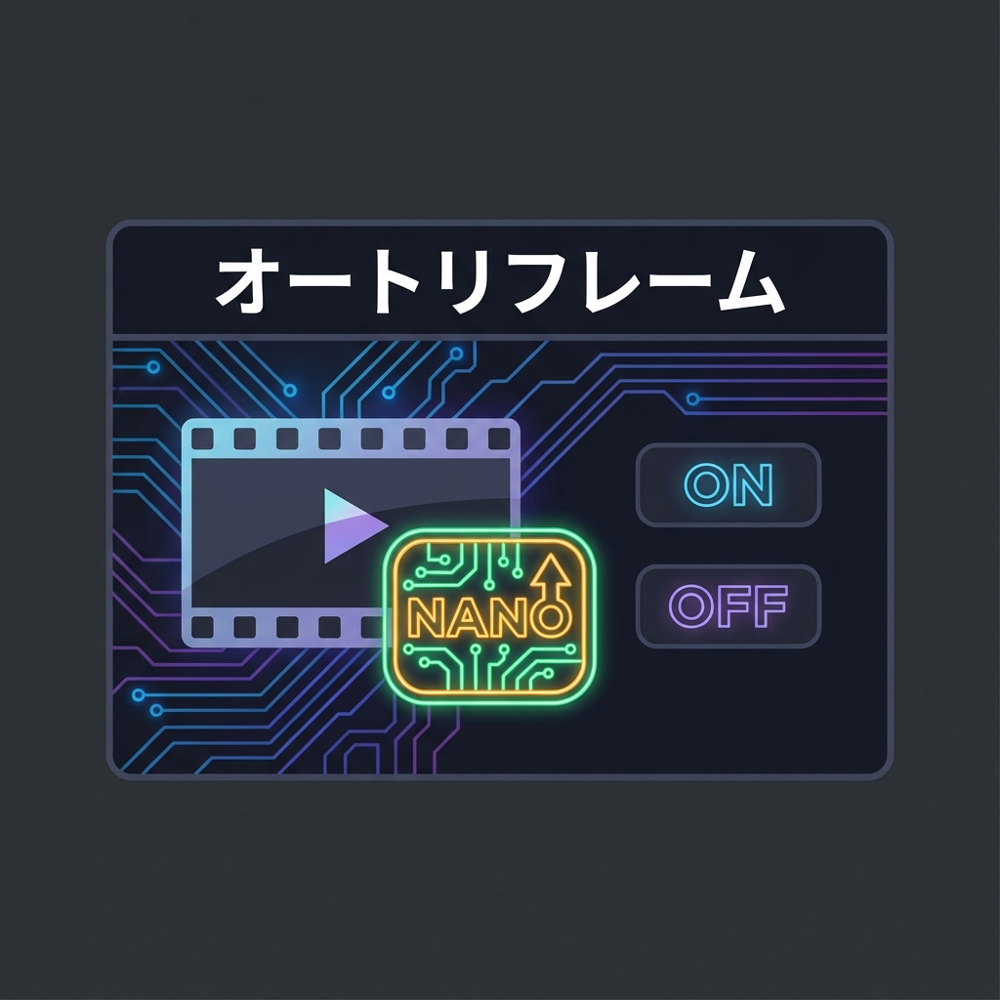
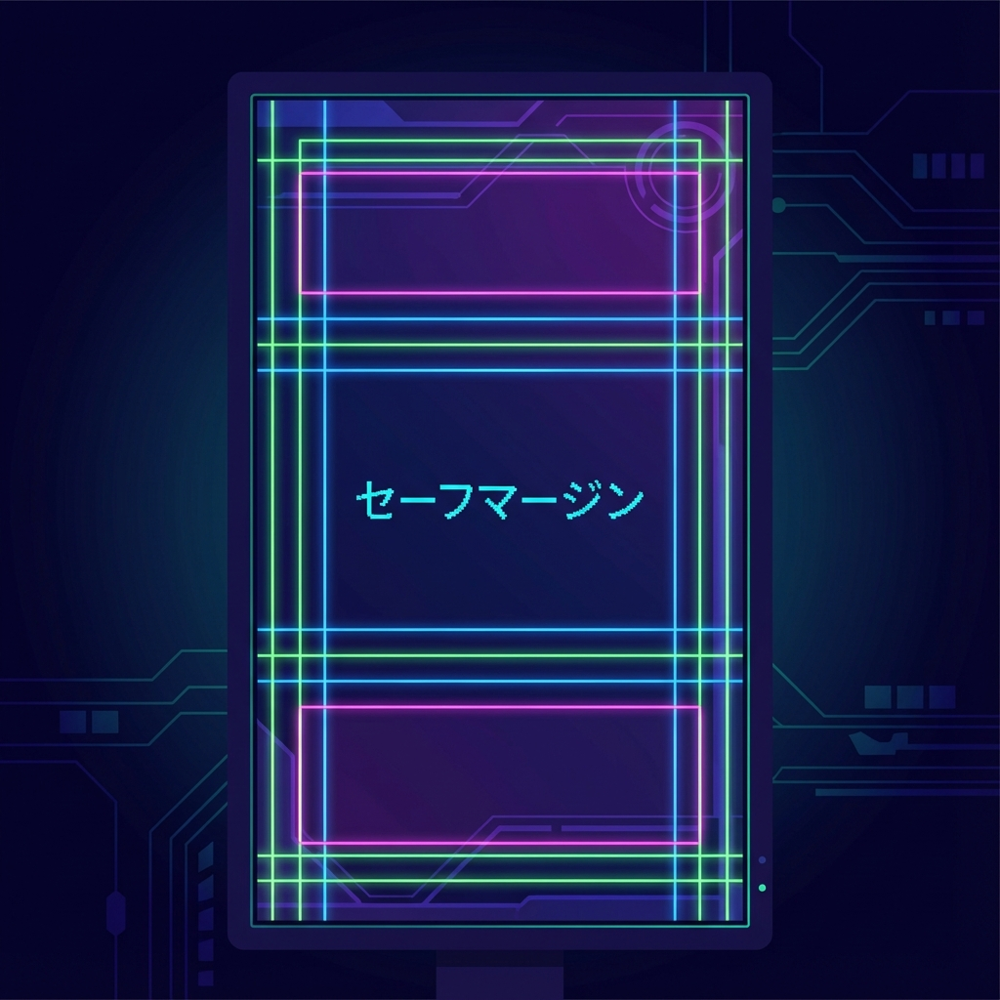

⌨️
今日のショートカット
Cmd+Y 新規平面 (Solid)
🎯 なぜ「縦型」なのか？
今はスマホで動画を見る人がほとんど。「画面いっぱいに表示される」没入感は、横型動画にはない強みです。 しかし、横長の素材を縦にするのは意外と大変。そこでAIの出番です。
🎬 どんな時に使うの？（利用シーン）
「パーティクル・エフェクト」は、こんな場面で必須です！
- ミュージックビデオのキラキラ演出
- 雪や雨を降らせる
- 魔法のような炎の表現
🛠️ 実践テクニック
1シーケンス設定：9:16

- 新規シーケンスを作成します。
- 設定タブで、フレームサイズを「1080 × 1920」にします（横長の逆！）。
- ピクセル比は「正方形ピクセル (1.0)」です。
- これをプリセットとして保存しておくと便利です。
2オートリフレーム（神機能）
「横長の動画を使いたいけど、被写体が端っこにいて見切れる…」そんな時はこれ！

- クリップを選択し、エフェクトパネルから「オートリフレーム」を適用します。
- なんと、AIが「一番大事な被写体」を自動認識し、常に画面の中央にくるようにカメラを動かしてくれます！
- 動く人物や、スポーツの映像などで絶大な威力を発揮します。
3「セーフゾーン」を意識する
⚠️ 超重要ポイント
TikTokやReelsは、画面の右側に「いいねボタン」、下に「タイトル」が表示されます。
せっかくのテロップがアイコン被って読めない！とならないよう、上下左右に余白を作りましょう。

- プログラムモニターの「＋」ボタンから「セーフマージン」を追加。
- 文字はできるだけ中央寄り（インナー10%以内）に配置するのが鉄則です。
🎬 書き出し設定
形式はいつも通り「H.264 (MP4)」ですが、プリセットで「モバイルデバイス 1080p HD 縦長」を選ぶか、ソースに合わせる設定にしましょう。
😱 困ったときは？ (トラブルシューティング)
パーティクルが見えない
再生ヘッドが0秒地点にあるとまだ発生していない場合があります。少し時間を進めてみましょう。
重くて動かない
パーティクルはPCへの負荷が高いです。プレビュー画質を下げて作業しましょう。